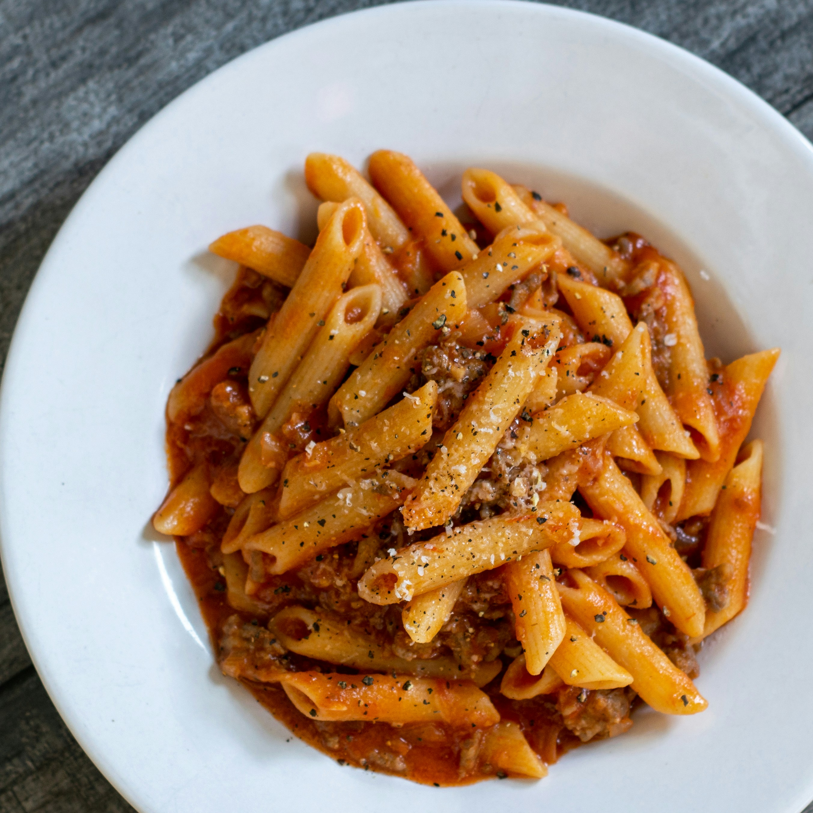

Home
Pasta Bake

Description
An easy and hearty meal that is perfect for family dinner or meal prep
Ingredients
- 300g pasta
- 1 onion diced
- 2 garlic cloves, minced
- 400g canned chopped tomatoes
- 100g grated cheese
Steps
- Boil the pasta until just tender, then drain.
- In a pan, heat olive oil. Saute onion and garlic until soft.
- Add chopped tomatoes. Simmer for 10 minutes.
- Pour the mixture into a baking dish. Sprinkle cheese evenly on top.
- Bake at 200 for 20-25 minutes.